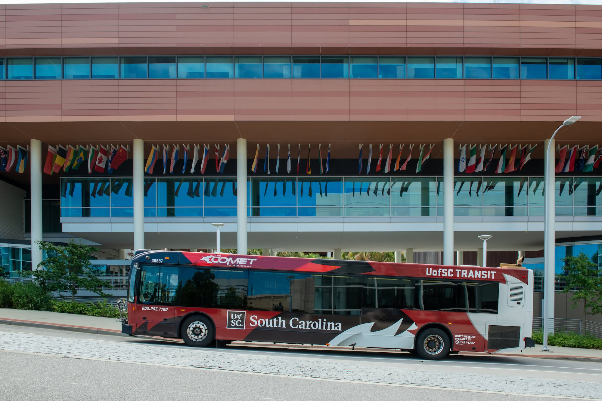

Low-Fidelity Prototype
Focused on layout and functionality, not visual design.


Collaborated on the design and prototyping of a conceptual campus transit app, applying human-computer interaction principles through user research, task analysis, and prototyping in Figma.
This project features the design of Carolina Commute, a conceptual USC-specific campus transit app created with a partner, Zach Jeffcoat, for the Human-Computer Interaction (ITEC 444) course. The app was designed around a specific gap in USC's existing TransLoc bus tracking system: when a bus appears stopped on the map, students have no way of knowing whether it's on a driver break, delayed, or out of service. Carolina Commute was designed around explicit status indicators, estimated break/delay times, and favorite-route notifications, so students could make informed decisions about waiting, walking, or rerouting rather than guessing. It's important to note this project is a design prototype only; no backend, live data, or functional application was built. The bus positions, ETAs, and statuses seen in the prototype are static mock data used to demonstrate the intended experience.
The project followed a full HCI design process from research through refinement, guided by findings from the task analysis and a 15-person usability survey, as well as user stories and a user-story map breaking the app down into activities, steps, and details. This research shaped a low-fidelity Figma prototype focused purely on layout and functionality rather than visual design, used to test core features early (bus tracking on the map, route planning, and an account and driver dashboard) and confirm navigation and flow before investing in polish. That structure was then carried into a high-fidelity prototype, which replaced the placeholder styling with a finished design system (a clean gray background and consistent colors and typography), improved readability and information hierarchy through better spacing and grouping, and adjusted certain interactions, such as changing account editing from an overlay to a full screen for better usability. The high-fidelity prototype was tested with 19 survey participants and several in-person usability sessions, which showed strong task success rates alongside specific feedback: confusion around what the ETA referred to, a need for bus stop context, unclear route colors, and minor issues with the driver dashboard inputs. These findings led to a final revised prototype that added a next-stop indicator to clarify ETA, a route color legend, improved driver dashboard inputs, clearer navigation, and interactive notification toggles, with the goal of improving clarity without overcomplicating the design.
Through this project, I strengthened my skills in user research methods, task analysis, and translating usability feedback into concrete design changes, while gaining experience applying Norman's principles (feedback, constraints, mapping, affordances, signifiers) and Gestalt principles (proximity, common region, similarity, figure/ground) to justify specific design decisions. Working as part of a two-person team throughout a full semester-long design cycle reinforced the importance of iterative testing and clear division of responsibilities, and presenting our final prototype to the class alongside my partner strengthened my ability to clearly explain and defend design rationale. Carolina Commute reflects my ability to combine user-centered research, prototyping, and usability evaluation into a complete, evidence-driven interaction design deliverable.
Focused on layout and functionality, not visual design.
Refined interface and improved consistency.

Changes made post-testing based on feedback.